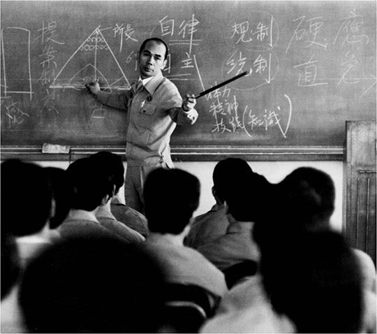
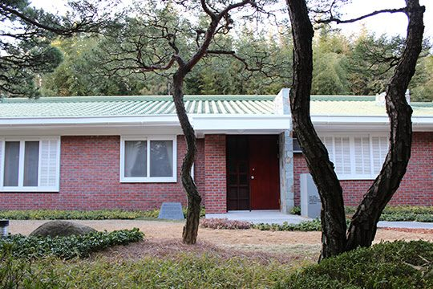
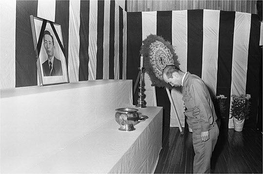

보도일 2015-05-18출처 조선일보 프리미엄조선 연재
1979년 10월 26일 박태준은 여느 날처럼 분주한 하루를 보냈다. 아침 8시 30분 임원간담회의 주재로 시작한 빡빡한 일정 중에 특별한 일은 특강이었다. 그는 제철연수원에 강사로 가서 포스코 중간간부들에게 ‘자주관리’와 ‘국제수준의 안목’을 역설했다.
“하나의 기업이 성장, 발전하는 과정도 국가와 꼭 마찬가지라고 생각합니다. 회사 창립 초창기, 즉 유년기와 소년기에는 회사를 어떻게 이끌어 나가느냐에 따라 회사의 장래와 성패가 좌우되는 것입니다. 우리 회사에서 유년기와 소년기에 해당하는 이 시기까지는 본인이 앞장서서 본인의 방침대로 회사를 이끌어왔습니다. 이제 우리 회사는 청년기에 접어들었다는 것이 본인의 판단입니다.
한 국가가 성장단계에 따라서 리더십의 패턴도 상이(相異)한 것과 마찬가지로, 이제는 우리 회사에 있어서 리더십의 패턴도 지금까지와 달라져야 한다고 생각합니다. 청년기에 접어들었기 때문에 여기서 여러분은 ‘자주관리’를 토착화하려는 본인의 뜻을 충분히 깨달았으리라고 생각합니다.”

이어서 박태준은 ‘국제수준의 안목’을 요구하고 강조했다.
“본인이 평소에 생각하는 바는 우리 직원들의 안목은 최소한 국제수준의 안목으로 표준화되고 평준화되어야 한다는 것입니다. 우리 회사는 이미 국제적인 수준의 기업으로 성장하였습니다. 그런데 왜 우리는 계속 일본에 뒤지고 있는가? 물론 축적된 기술력의 격차나 일천한 역사 등 모든 면에서 아직 부족하다는 점을 도외시할 수는 없겠지만, 우리의 안목이 일본 수준에 미치지 못한 데에도 중요한 원인이 있습니다.
안목의 국제화가 자주관리의 성공의 요체가 될 것입니다. 그러므로 여러분이 국제수준의 안목을 가지는 것이 곧 회사를 반석 위에 올려놓을 수 있는 오직 하나의 힘이라는 생각을 가져야 합니다.”
포항시 효자동에 있는 제철연수원에서 박태준이 회사의 리더십 패턴 변화에 대해 국가의 그것에 비유하며 자주관리와 국제수준의 안목을 강조한 그날 저녁, 박정희는 무참히 시해를 당한다. 그 비보를 박태준은 이튿날 이른 아침에 포항의 숙소에서 처음 들었다. 포스코 임직원들은 포항시 효자동 포철주택단지 내(內) 야트막한 야산 언덕 위에 외톨의 자그만 절간처럼 자리 잡은 박태준 사장의 숙소를 ‘효자사(孝子寺)’라 부르고 박 사장을 ‘효자사 주지’라 부르기도 했다. 그만큼 그는 서울의 가족과 떨어져 지내는 날들이 많았다.

10월 27일 아침에도 박태준은 혼자였다. 음식도 장만하고 옷가지도 챙겨주는, 마치 군대 장교시절의 당번병 같은 비서(총각)만 거실을 서성거렸다. 라디오를 통해 엄청난 뉴스를 들은 비서는 입을 꾹 다문 채 바짝 긴장을 죄고 있었다. 마냥 기다리지 못한 비서가 살그머니 침실의 문을 열었다. 여느 아침과 달리 박태준은 단정히 책상 앞에 앉아 눈을 감고 있었다. 그의 가슴 앞에 놓인 라디오를, 비서는 보았다. 라디오는 잠잠했다. 어떤 소리도 내지 않았다. 꺼진 상태였다. 비서는 아무 말 없이 도로 문을 닫았다.
꼬박 하루를 두문불출로 보낸 박태준은 이튿날 아침에야 평소와 다름없이 작업복 차림으로 안전화를 졸라맸다. 그러나 회사에 당도하여 먼저 회의를 주재하지 않았다. 혼자서 묵묵히 걸었다.
‘나는 여기까지가 아닌가 하는 느낌’이라고 하셨던 그 말씀이 정녕 이것이었단 말인가? 몇 차례나 부질없는 원망처럼 그 말을 되뇐 박태준의 납덩이같은 발길이 이어 나가는 동선(動線)은 박정희의 포항제철소 방문 발길이 그려놓은, 지표에는 없지만 그의 머리에는 뚜렷이 남은 동선이었다. 1978년 12월 포철을 열두 번째로 찾은 박정희가 걸어갔던 동선을 따라 무거운 걸음을 옮기는 박태준은 견디기 어려운 슬픔 속에서도 박정희와 약속하고 박정희와 함께 꿈꾼 ‘철강 2000만 톤 시대’를 놓칠 수 없었다.
‘이제 어떻게 할 것인가? 어떤 방법을 쓰든 그 약속을 실현해야겠는데, 과연 어떤 방법이 있는가?’

졸지에 박정희가 사라진 날, 박태준이 지휘하고 박정희가 엄호한 포항종합제철은 이미 대한민국 국민경제의 금자탑으로 우뚝 솟아 있었다. 임자 뒤에는 내가 있으니 소신껏 밀어붙여 봐. 이 격려성 언약을 박정희가 고스란히 실천함으로써 박태준은 온갖 정치적 외풍과 음모를 돌파할 수 있었다. 그러나 별안간 박정희는 지상에서 사라졌다. 이것이 엄연한 현실이었다.
(②편에서 계속)